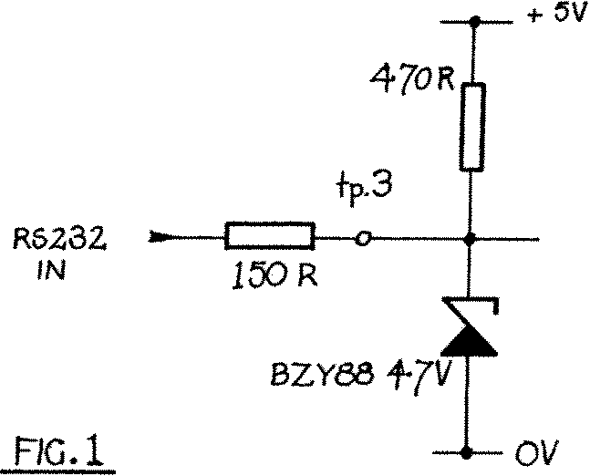

80-Bus News |
July–October 1982 · Volume 1 · Issue 3 |
| Page 34 of 51 |
|---|
Taking the serial case first. On a Nascom there is no input provided for the DTR signal to be received by the computer. However, there are one or two spare inputs available on the keyboard port (one or two depending upon whether the machine is a Nascom 2 or a Nascom 1). By long standing convention with Nascoms, bit 7 of the keyboard port is used for this purpose. On a Nascom 2 this is conveniently returned to test point 3 whilst on a Nascom 1 this is available on the keyboard plug. Note that this input is at TTL levels, that is the signal applied to this pin must be between +5 and 0 volts. Also note that this input is not ‘pulled up’ to +5 volts on the Nascom 1, and only ‘pulled up’ on the Nascom 2 by a 10K resistor which is located for some improbable reason on the keyboard. This lack of ‘pull up’ on the keyboard input tends towards atrocious noise immunity and in either case the inclusion of a 470R resistor mounted on the back of the pcb, connected between the input pin and some nearby +5 volt point is a good idea.
Now with some printers the DTR signal is provided at TTL levels and this may be connected directly to bit 7 of the Nascom keyboard port. More typically the DTR signal swings between +12 and −12 volts, this being the standard voltages employed by the RS232 protocol. Direct connection of this signal to a TTL input will lead to the instant death of the input latch and possibly other damage. Some method of limiting or converting the +12/−12 volt signal to an acceptable +5/0 volt swing must be used. The ideal answer is a 4.7 volt zener diode with the cathode (the end with the coloured band) connected to the input pin, and the anode connected to the 0 volt rail. As the zener is reverse biased when the +12 volt signal is applied, it will conduct and limit the incoming voltage to +4.7 volts. When a −12 volt signal is applied the diode it is forward biased and the voltage will be limited to about −0.6 volts. Entirely suitable for the TTL input. Unfortunately, the zener diode can not be connected directly across the incoming DTR line, as, if the sending device, the printer, is capable of supplying any amount of current the conduction of the diode would allow a considerable current to pass, damaging either the diode or the printer or both. A series limiting resistor of 150R provides the answer. This should be connected in series with the incoming DTR line. The complete circuit is shown below:
On the Gemini GM811 and GM813 boards connection for the DTR signal is provided in the for of the Clear To Send (CTS) input. This is another line in the RS232 protocol and is the complement of the DTR output. By connecting the two, the DTR output from the printer indicates to the CTS input on the computer that all is ready and data transmission can commence. On the Gemini cards there is no need to convert the DTR signal to TTL levels as the CTS input on the Gemini is fully RS232 compatible. The CTS input is also TTL compatible, although noise immunity may be improved by changing the values of resistors on the main board. The details in the technical manuals are adequate, so refer to them if the DTR signal is at TTL levels.
When considering the RS232 protocols what has been previously described is somewhat simplified, and RS232 has other signals which may or may not play a part in the handshaking process. Some printers, usually those with keyboards and designed for two way communication may require additional signals to enable; them to print. My old Texas Instruments 745 and the Teletype 43 are two such printers. The additional
| Page 34 of 51 |
|---|